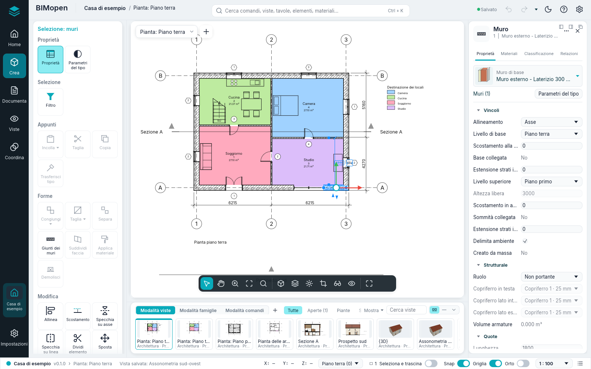
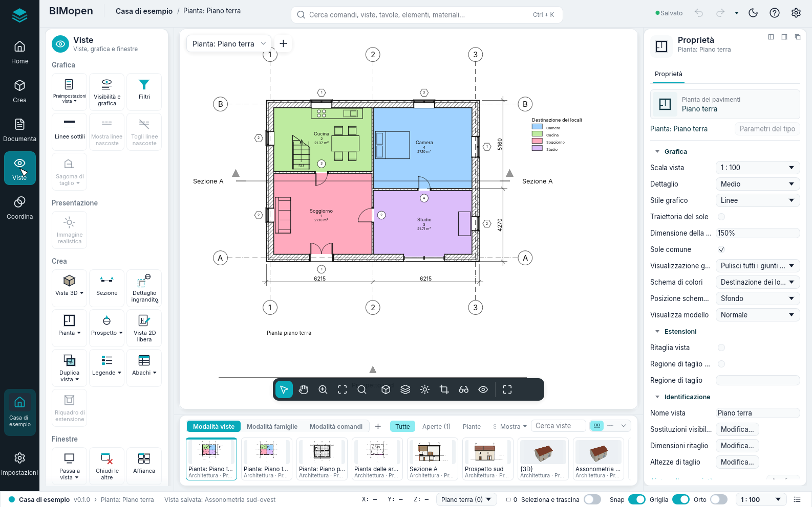
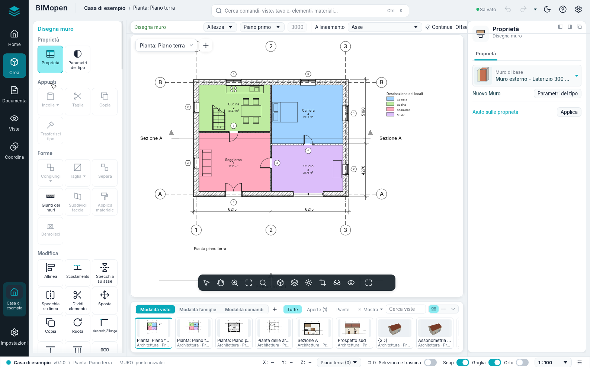
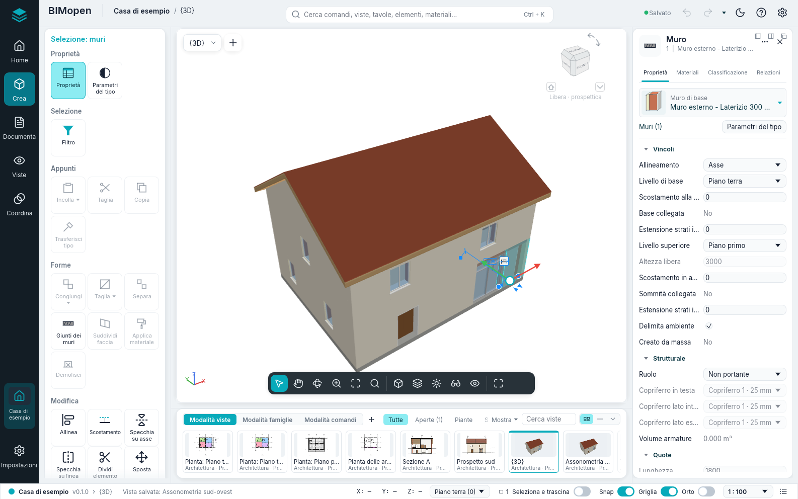
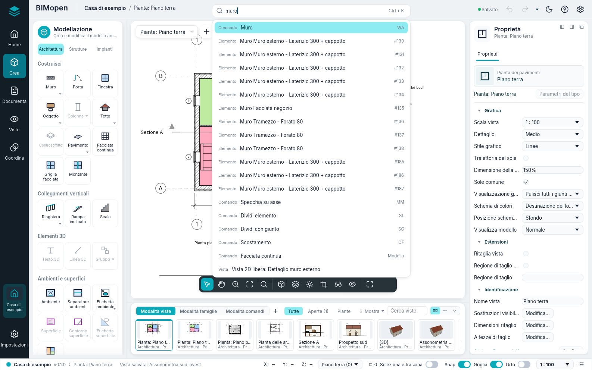

L'interfaccia
Questo capitolo descrive lo stile di interfaccia BIMopen, quello con cui BIMopen si avvia, sul computer e nel browser. Gli altri aspetti, lo stile Classica e la modalità touch per tablet e telefoni, eseguono gli stessi comandi con gli stessi nomi; Stili dell'interfaccia li mostra e spiega come passare dall'uno all'altro.

La finestra ha queste parti:
- la barra laterale, sul bordo sinistro: il marchio di BIMopen, che apre il menu dell'applicazione, poi Home, Crea, Documenta, Viste e Coordina, e in basso il progetto aperto e Impostazioni;
- il pannello degli strumenti, accanto alla barra laterale: gli strumenti della voce scelta nella barra laterale, come schede di riquadri;
- la barra superiore: il progetto e la vista attiva, la ricerca dei comandi, che è anche la riga di comando, lo stato del salvataggio, Annulla e Ripristina, gli strumenti di accesso rapido, il tema chiaro o scuro, il menu ? e Opzioni;
- l'area di disegno, al centro: le viste, ciascuna con il suo selettore della vista in alto e la barra della vista in basso; mentre uno strumento lavora, la striscia delle opzioni corre sopra di essa;
- il pannello dell'elemento, a destra: le proprietà della selezione, o della vista attiva;
- la striscia delle viste e delle famiglie, sotto l'area di disegno;
- la barra di stato, lungo il bordo inferiore.
I pannelli mantengono la loro larghezza qualunque cosa mostrino: un nome lungo viene accorciato con «…» e il suo suggerimento lo mostra intero. Trascina il bordo del pannello degli strumenti o del pannello dell'elemento per allargarlo o restringerlo; BIMopen lo ricorda per la sessione successiva. Un clic sulla voce già scelta della barra laterale chiude il pannello degli strumenti, e un secondo clic lo riapre.
In arabo l'intera finestra è speculare: la barra laterale e il pannello degli strumenti sono a destra, il pannello dell'elemento a sinistra, e le strisce si leggono da destra a sinistra.
Menu dell'applicazione
Il marchio di BIMopen, in cima alla barra laterale, apre il menu dell'applicazione: i comandi che agiscono sull'intero progetto. La voce Home della barra laterale mostra il progetto con i suoi livelli, viste, tavole e abachi, e ricorda che i comandi dei file sono in questo menu.
| Voce | Che cosa fa |
|---|---|
| Nuovo | Chiude il progetto corrente e ne avvia uno nuovo dal modello predefinito: due livelli con le loro piante, e i tipi predefiniti |
| Apri… | Apre un progetto .bimopen, oppure importa un modello .rvt, scelto in una finestra di dialogo dei file. Nel browser, trascina invece il file nella pagina |
| Progetto di esempio | Apre la casa di esempio |
| Salva Ctrl+S | Salva il progetto nel suo file; un progetto mai salvato chiede un nome, come Salva con nome… |
| Salva con nome… | Salva il progetto in un nuovo file .bimopen e continua a lavorare su quel file |
| Stampa… Ctrl+P | Stampa le tavole in PDF |
| Esporta ▸ Esporta IFC4… | Scrive il modello come file IFC4 |
| Esporta ▸ Esporta pianta SVG… | Scrive la pianta attiva come disegno SVG |
| Esporta ▸ Esporta vista PNG… | Scrive la vista attiva come immagine PNG |
| Documenti aperti | Elenca le finestre di vista aperte; fai clic su una per portarla in primo piano |
| Opzioni | Apre la finestra di dialogo Opzioni |
| Esci | Chiude BIMopen (solo desktop) |
Nuovo, Apri… e Progetto di esempio sostituiscono il progetto corrente senza chiedere conferma: salvalo prima se vuoi conservarlo.
Warning
Le modifiche non salvate vanno perse quando scegli Nuovo, Apri… o Progetto di esempio. La barra superiore dice Modifiche non salvate finché ci sono modifiche da salvare.
Opzioni
L'ingranaggio all'estremità destra della barra superiore, oppure Menu dell'applicazione ▸ Opzioni, apre Opzioni. Ha, tra le altre, queste impostazioni:
| Impostazione | Valori | Effetto |
|---|---|---|
| Interfaccia utente ▸ Lingua | Italiano, English, Deutsch, Français, Español, العربية | La lingua di tutta l'interfaccia, subito |
| Interfaccia utente ▸ Tema | Chiaro, Scuro | I colori della finestra. Scuro attiva anche Inverti colore sfondo. Anche il sole o la luna nella barra superiore lo cambia |
| Interfaccia utente ▸ Interfaccia | BIMopen, Classica | Lo stile dell'interfaccia, vedi Stili dell'interfaccia |
| Interfaccia utente ▸ Modalità touch | Automatica, Sempre, Mai | La disposizione per gli schermi a sfioramento, vedi Stili dell'interfaccia |
| Grafica ▸ Inverti colore sfondo | attivo, disattivo | Viste con sfondo scuro e linee chiare |
| Cubo di orientamento ▸ Dimensione cubo di orientamento, Opacità quando inattivo | Piccolo, Medio, Grande; da 0 % a 100 % | La dimensione del cubo, e quanto si vede mentre il puntatore è altrove |
| Cubo di orientamento ▸ Mantieni scena in posizione verticale | attivo, disattivo | Trascinando il cubo il modello non si capovolge mai; disattivo, la vista può passare oltre la sommità |
| Cubo di orientamento ▸ Adatta alla vista | attivo, disattivo | Un clic sul cubo adatta anche il modello alla finestra |
BIMopen ricorda la lingua, il tema e lo stile al successivo avvio.
Barra superiore e strumenti di accesso rapido
La barra superiore mostra, da sinistra, BIMopen, il nome del progetto (un clic apre Informazioni sul progetto) e la vista attiva; al centro la ricerca dei comandi; a destra:
| Controllo | Che cosa fa |
|---|---|
| Salvato / Modifiche non salvate | Lo stato del salvataggio; un clic salva, Ctrl+S |
| Annulla | Annulla l'ultima modifica, Ctrl+Z. In grigio quando non c'è nulla da annullare |
| Ripristina | Ripristina la modifica appena annullata, Ctrl+Y. In grigio quando non c'è nulla da ripristinare |
| Gli strumenti di accesso rapido | Gli strumenti che hai aggiunto, poi la freccia della barra di accesso rapido |
| Il sole o la luna | Passa al tema chiaro o a quello scuro |
| ? | Guida F1, Comandi (tutti i comandi della riga di comando, come digitare help) e Informazioni (la versione, la licenza e i riconoscimenti) |
| L'ingranaggio | Opzioni |
Clic destro su un riquadro del pannello degli strumenti e Aggiungi alla barra degli strumenti Accesso rapido: lo strumento compare nella barra superiore e parte da lì qualunque voce della barra laterale sia aperta. Clic destro su di esso, lì, per Rimuovi da barra strumenti Accesso rapido o Aggiungi separatore (una linea alla sua destra). La piccola freccia dopo gli strumenti, Personalizza barra degli strumenti Accesso rapido, elenca gli strumenti di default (Apri…, Salva, Quota allineata, Etichetta per categoria, Testo, Vista 3D, Sezione, Chiudi nascoste, Passa a vista): spunta uno per mostrarlo, togli la spunta per rimuoverlo. Nello stesso menu, Personalizza barra degli strumenti Accesso rapido… apre una finestra con gli strumenti in ordine: Sposta in alto e Sposta in basso spostano quello selezionato, Aggiungi separatore mette una linea dopo di esso, Rimuovi lo toglie (o toglie una linea), OK applica. Gli strumenti si conservano per le sessioni successive.
? ▸ Guida (F1) apre questo manuale, nella lingua dell'interfaccia, nel browser. F1 apre la pagina di ciò che stai facendo: la finestra di dialogo aperta, il riquadro sotto il mouse (il suo suggerimento termina con Premi F1 per ulteriori informazioni) o lo strumento attivo.
Barra laterale e pannello degli strumenti
Ogni voce della barra laterale mostra i suoi strumenti nel pannello degli strumenti, come schede: una scheda ha un titolo, i suoi gruppi, e in ogni gruppo grandi riquadri con un'icona e un nome. Un riquadro con un piccolo segno ▾ ha un menu: un clic sul riquadro avvia il comando, un clic sul segno apre il menu con le sue varianti. Posare il mouse su un riquadro mostra che cosa fa e, tra parentesi, la scorciatoia che puoi digitare per avviarlo. I comandi che BIMopen non esegue ancora sono in grigio, e il loro suggerimento dice «Non ancora disponibile»; Livello, Griglia e Piano guida sono in grigio in una vista 3D («Non disponibile nella vista 3D»).
| Barra laterale | Scheda | Gruppo | Comandi |
|---|---|---|---|
| Crea | Modellazione ▸ Architettura | Costruisci | Muro ▾, Porta, Finestra, Oggetto ▾, Colonna ▾, Tetto ▾, Controsoffitto, Pavimento ▾, Facciata continua, Griglia facciata, Montante |
| Collegamenti verticali | Ringhiera ▾, Rampa inclinata, Scala | ||
| Elementi 3D | Testo 3D, Linea 3D, Gruppo ▾ | ||
| Ambienti e superfici | Ambiente, Separatore ambienti, Etichetta ambiente ▾, Superficie ▾, Contorno superficie, Etichetta superficie ▾ | ||
| Aperture | Su faccia, Cavedio, Nel muro, Foro verticale, Abbaino | ||
| Riferimenti | Livello, Griglia | ||
| Piano di lavoro | Definisci, Visualizza, Piano guida, Vista del piano | ||
| Modellazione ▸ Strutture | Elementi strutturali | Trave, Muro strutturale ▾, Pilastro, Solaio strutturale ▾, Travatura reticolare, Controvento, Orditura di travi | |
| Giunti | Giunto ▾, Giunti automatici | ||
| Fondazioni | Plinto, Fondazione continua, Platea ▾ | ||
| Armature | Armatura, Armatura ad area, Armatura a percorso, Rete ad area, Rete singola, Copriferro, Manicotto, Armatura adattiva, Opzioni copriferro, Opzioni armature | ||
| Elementi 3D | Oggetto ▾, Testo 3D, Linea 3D, Gruppo ▾ | ||
| Aperture | Normale alla faccia, Cavedio, Nel muro, Foro verticale, Abbaino | ||
| Riferimenti | Livello, Griglia | ||
| Piano di lavoro | Definisci, Visualizza, Piano guida, Vista del piano | ||
| Modellazione ▸ Impianti | Aria | Canale, Canale da tracciato, Raccordo canale, Accessorio canale, Isolamento canale, Canale flessibile, Bocchetta | |
| Componenti prefabbricati | Elemento prefabbricato, Percorso a più punti | ||
| Dettagli impianti | Rinforzo canale | ||
| Schemi P&ID | Editor P&ID | ||
| Meccanica | Apparecchiatura meccanica, Dispositivo di regolazione | ||
| Altri impianti | Idrico-sanitario ▾, Impianto elettrico ▾, Modellazione ▾, Piano di lavoro ▾ | ||
| Metallo | Giunti | Giunto ▾, Giunti automatici | |
| Elementi di carpenteria | Piastra, Bulloni ▾, Saldatura | ||
| Lavorazioni | Scantonatura, Taglio inclinato, Accorcia, Taglio sagomato | ||
| Tagli automatici | Taglio di testa, Unione d'angolo ▾, Intersezione, Taglia con | ||
| Piano di lavoro | Definisci, Visualizza, Piano guida, Vista del piano | ||
| Prefabbricazione | Suddivisione | Suddividi | |
| Giunzioni | Parti di assemblaggio | ||
| Armature | Armatura, Rete su misura | ||
| Produzione | Disegni di officina, Esporta per CAM | ||
| Impostazioni | Impostazioni prefabbricati, Profili sottili a freddo | ||
| Aggiornamento automatico | Sospendi ▾ | ||
| Collega e importa | Collega | Collega progetto, Collega IFC, Collega CAD, Collega topografia, Decalcomania ▾, Nuvola di punti, Gestisci collegamenti, Collega PDF, Collega immagine, Modello federato ▾ | |
| Importa | Importa CAD, Importa gbXML, Importa PDF, Importa immagine | ||
| Carica da libreria | Carica famiglia, Carica come gruppo, Inserisci da file ▾ | ||
| Masse e sito | Masse | Visualizza masse ▾, Nuova massa, Posiziona massa, Disegna in 3D | |
| Da facce di massa | Facciata continua, Tetto, Muro, Solaio, Terreno da faccia | ||
| Sito | Terreno, Elemento di sito, Parcheggio, Platea, Contesto circostante | ||
| Modifica sito | Dividi terreno, Unisci terreni, Sottoarea, Confine di proprietà, Livellamento, Etichetta isoipse | ||
| Documenta | Documenta | Tavole | Tavola, Vista, Cartiglio, Revisioni, Griglia guida, Disattiva vista |
| Quota | Allineata, Lineare, Angolare, Radiale, Diametro, Lunghezza arco, Quota di punto ▾ | ||
| Dettaglio | Linea di dettaglio, Campitura ▾, Simbolo di dettaglio ▾, Nuvola di revisione, Gruppo 2D ▾ | ||
| Testo | Testo, Correttore ortografico | ||
| Etichetta | Etichetta, Etichetta tutto, Materiale, Legenda colori, Etichette travi, Etichetta multicategoria, Rimando a vista, Numerazione gradini, Etichetta armature ▾, Nota codificata ▾, Legenda canali, Legenda tubazioni | ||
| Simbolo | Simbolo, Direzione di orditura, Simbolo armatura, Percorso scala | ||
| Viste | Viste | Grafica | Preimpostazioni vista ▾, Visibilità e grafica, Filtri, Linee sottili, Mostra linee nascoste, Togli linee nascoste, Sagoma di taglio ▾ |
| Presentazione | Immagine realistica | ||
| Crea | Vista 3D ▾, Sezione, Dettaglio ingrandito ▾, Pianta ▾, Prospetto ▾, Vista 2D libera, Duplica vista ▾, Legende ▾, Abachi ▾, Riquadro di estensione | ||
| Finestre | Passa a vista ▾, Chiudi le altre, Affianca, Sovrapponi, Replica, Ingrandisci, Pannelli ▾ | ||
| Indice del progetto | L'albero delle viste, degli abachi, delle tavole e delle famiglie del progetto | ||
| Coordina | Coordina | Energia | Analisi energetica |
| Verifica | Controlla interferenze, Mostra carichi, Connessioni scollegate, Carichi elettrici, Percorso di esodo | ||
| Modello di calcolo | Asta di calcolo, Pannello di calcolo, Nodo di calcolo, Appoggi e vincoli, Modello di calcolo automatico, Risultati di calcolo | ||
| Spazi e zone | Spazio, Separatore spazi, Etichetta spazio, Nomi degli spazi, Zona disegnata, Zona da spazi | ||
| Lavoro condiviso | Gruppi di lavoro, Sincronizza, Mostra cronologia, Attiva condivisione, Gruppo di lavoro attivo, Attenua gli altri gruppi, Ricarica modifiche, Rilascia elementi, Richieste di permesso, Stato della condivisione | ||
| Archivio | Ripristina copia di sicurezza, Opzioni di pubblicazione | ||
| Coordinamento | Copia e monitora ▾, Revisione coordinamento ▾, Opzioni coordinamento, Riallinea ospiti, Variazioni modello federato | ||
| Impostazioni | Impostazioni | Impostazioni | Materiali, Stili per categoria, Snap, Informazioni progetto, Parametri progetto, Unità di progetto, Copia impostazioni da progetto, Parametri generali |
| Fasi | Fasi | ||
| Alternative | Alternative di progetto, Versione principale | ||
| Numerazione | Rinumera | ||
| Posizione | Coordinate condivise ▾, Sposta progetto ▾ | ||
| Gestione progetto | Immagini del progetto, Vista di apertura | ||
| Selezioni | Salva selezione, Carica selezione, Modifica selezione | ||
| Interroga | Seleziona per numero, Numeri della selezione, Avvertenze |
In corsivo i comandi che BIMopen non esegue ancora; ▾ segna un menu.
Premi e rilascia Alt, oppure premi F10, per mostrare i suggerimenti dei tasti: una lettera su ogni voce della barra laterale e, sui riquadri della scheda aperta, la scorciatoia del loro strumento. Digita la lettera di una voce per aprirla, poi le lettere di un riquadro per avviarne lo strumento; Esc nasconde i suggerimenti. Mentre sono visibili, ciò che digiti non va alla riga di comando.
Gli strumenti di Crea
Gli strumenti che usi di più per modellare sono in Crea ▸ Modellazione ▸ Architettura:
| Gruppo | Riquadri |
|---|---|
| Costruisci | Muro WA, Porta DR, Finestra WN, Tetto RF, Pavimento SB, Oggetto CM, Griglia facciata continua CG, Montante MU |
| Collegamenti verticali | Ringhiera RA, Scale ST |
| Ambienti e superfici | Ambiente RM, Separatore ambienti RS, Superficie ▾ (Pianta delle aree, Contorno superficie, Superficie), Legenda LG, Impostazioni ▾ (Calcolo aree e volumi, Schemi di colore) |
| Riferimenti | Livello: disegnato in un prospetto o in una sezione, due clic all'altezza del nuovo livello (da una pianta apre un prospetto); Griglia GR |
Contorno superficie e Superficie funzionano in una pianta delle aree: finché non ne è aperta una sono in grigio, e il loro suggerimento dice di aprire prima una pianta delle aree.
Gli strumenti di Documenta
| Gruppo | Riquadri |
|---|---|
| Tavole | Tavola: una nuova tavola con il cartiglio che scegli; Vista: posiziona una vista sulla tavola aperta |
| Quota | Allineata DI, Lineare DL, Angolare DA |
| Testo | Testo TX |
| Dettaglio | Linea di dettaglio, Campitura, Regione di mascheramento, Componente di dettaglio CD, Dettaglio ripetuto RD, Isolamento IS |
| Etichetta | Assegna etichette a tutti TG |
Tavole ▸ Vista funziona solo mentre è aperta una tavola.
Gli strumenti di Viste

| Gruppo | Riquadri |
|---|---|
| Crea | Vista 3D ▾ (Vista 3D predefinita, Salva vista), Pianta ▾ (Pianta del pavimento, Pianta delle aree), Duplica vista ▾ (Duplica, Duplica con dettagli), Sezione SE, Prospetto ▾ (Prospetto EL, Prospetto telaio), Dettaglio ingrandito DT (un richiamo), Vista 2D libera VD, Abachi ▾ (Abaco/Quantità, Computo dei materiali, Elenco tavole, Blocco annotazioni, Abachi predefiniti) |
| Grafica | Visibilità e grafica VG, Filtri, Modelli vista, Applica modello alla vista corrente, Crea modello da vista corrente |
| Finestre | Passa a vista, Replica, Sovrapponi, Affianca, Ingrandisci, Chiudi le altre, Pannelli |
Salva vista funziona solo mentre è aperta una vista 3D, e Duplica con dettagli solo per le viste che non sono 3D. Sotto gli strumenti, la scheda Indice del progetto contiene l'intero albero del progetto.
Gli strumenti di Impostazioni
| Gruppo | Riquadri |
|---|---|
| Impostazioni | Materiali, Informazioni sul progetto, Stili per categoria, Stili di linea, Elimina inutilizzati, Unità di misura UN, Snap, e Impostazioni aggiuntive (Stili di linea, Retini) |
| Interroga | Verifica: controlla le aperture e i riferimenti del modello e riferisce alla riga di comando |
Snap attiva e disattiva lo snap per tutto il programma: è evidenziato quando è attivo, come l'interruttore Snap della barra di stato. Impostazioni aggiuntive ▸ Snap… ha Snap disattivati e gli Incrementi di aggancio per quote lineari (lunghezze separate da punto e virgola, per impostazione 1000; 100; 10 mm): dove nessun elemento aggancia, il cursore si muove a passi del maggiore di essi che non supera un pixel allo zoom corrente.
La scheda contestuale

Quando avvii uno strumento o selezioni qualcosa, una scheda compare in cima al pannello degli strumenti, qualunque voce della barra laterale sia aperta, con il nome di ciò che stai facendo nel colore di evidenza: Disegna muro mentre disegni muri, Selezione: muri con dei muri selezionati, Selezione multipla con elementi di categorie diverse, Modifica | … nelle altre modalità. Quando lo strumento termina, o la selezione viene annullata, la scheda scompare; Esc o un clic su uno spazio vuoto fanno lo stesso.
Ha sempre questi gruppi:
| Gruppo | Riquadri |
|---|---|
| Proprietà | Proprietà: mostra o nasconde il pannello dell'elemento; Parametri del tipo: le proprietà del tipo della selezione, o del prossimo elemento che lo strumento posizionerà |
| Modifica | Allinea AL, Scostamento OF, Specchia su asse MM, Specchia su linea DM, Dividi elemento SL, Dividi con giunto SG, Sposta MV, Copia CO, Ruota RO, Accorcia/Allunga TR, Accorcia/Allunga elemento singolo, Accorcia/Allunga più elementi, Ripeti in serie AR, Scala RE, Fissa PN, Sblocca UP, Elimina (Del) |
Elimina funziona solo quando è selezionato qualcosa. Il capitolo sulla selezione e la modifica descrive gli strumenti di modifica.
Altri gruppi compaiono in base a ciò che è selezionato o allo strumento:
| Quando | Gruppo e riquadri |
|---|---|
| Qualcosa selezionato | Selezione: Filtro (vedi Selezione e modifica) |
| Porte o finestre selezionate | Apertura: Ribalta verso, Ribalta cerniera |
| Muri selezionati | Modifica muro: Collega sopra/sotto (i muri salgono fino al tetto sopra di loro), Scollega sopra/sotto |
| Un livello selezionato | Vista: Apri pianta |
| Sezioni o prospetti selezionati | Sezione: Dividi segmento (solo sezioni), Ribalta, Vai a vista |
| Un richiamo selezionato | Dettaglio: Vai a vista |
| Facciate continue selezionate | Facciata continua: Griglia facciata continua, Montante, Pannello |
| Strumento Pavimento o Tetto | Disegna: Linee di contorno, Seleziona muri |
| Strumento Scale o Ringhiera | Modalità: Termina modalità di modifica; Disegna: Rampa o Linee |
| Strumento Montante | Posizionamento: Linea di griglia, Segmento di griglia, Tutte le linee di griglia |
| Uno strumento di dettaglio | Le forme di disegno dello strumento |
Striscia delle opzioni
Mentre uno strumento lavora, una striscia corre sopra la parte alta della vista: il nome di ciò che stai facendo, poi le impostazioni dello strumento. Valgono per i prossimi elementi che posizioni.
| Strumento | Impostazioni sulla striscia delle opzioni |
|---|---|
| Muro | Altezza o Profondità; il livello che il muro raggiunge, oppure Non collegata con il suo valore; Allineamento; Continua; Offset; Raggio (in grigio: i muri curvi non sono ancora disponibili); Esterno a sinistra o Esterno a destra (la barra spaziatrice li scambia) |
| Tetto | La forma: Due falde, Padiglione o Piano; Inclinazione, da 5° a 60°; Sporgenza, fino a 2 m |
| Scale | Larghezza, in millimetri; Tipo di ringhiera, oppure Nessuno |
| Quote | Che cosa il cursore seleziona per primo su un muro: Linee d'asse del muro o Superfici del muro |
| Dettaglio ingrandito (richiamo) | La scala della nuova vista di dettaglio, oppure Rif. ad altra vista e la vista di dettaglio o la vista 2D libera a cui punta il richiamo (sempre attivo in una vista 2D libera) |
| Contorno superficie | Linea o Seleziona linee; con Seleziona linee, Applica regole area oppure un Offset |
Gli interruttori Orto e Snap della barra di stato valgono per ogni strumento che disegna linee: Orto tiene i segmenti orizzontali o verticali, Snap aggancia estremi, punti medi e intersezioni. Con Orto disattivato, tenere premuto Shift durante il disegno dà lo stesso vincolo; con esso attivo, Shift lo rilascia.
Pannello dell'elemento
Il pannello dell'elemento, a destra, mostra e modifica i parametri di ciò su cui stai lavorando. La sua intestazione ha la categoria e il nome di ciò che mostra, Chiudi (che annulla la selezione) e Altre azioni (⋯: Parametri del tipo e le azioni della scheda contestuale). Sotto l'intestazione, le sue schede:
| Scheda | Che cosa contiene |
|---|---|
| Proprietà | Il selettore del tipo, poi i parametri, in gruppi (Vincoli, Grafica, Identificazione…). Fai clic sul nome di un gruppo per comprimerlo. I valori in grigio sono di sola lettura: sono calcolati dal modello. Applica, o Enter, conferma un valore che stai digitando |
| Materiali | Per muri, pavimenti e tetti: gli strati del tipo con i loro colori e spessori, e un'anteprima degli strati |
| Classificazione | La categoria, il tipo e la classe IFC |
| Relazioni | Il livello, l'host, le porte e le finestre che ospita, le viste e gli abachi in cui compare |
Il selettore del tipo mostra la famiglia in lettere piccole, il tipo sotto, e un'anteprima del tipo: muri, pavimenti e tetti con i loro strati, porte, finestre e componenti come un piccolo disegno. Fai clic per scegliere un altro tipo: gli elementi selezionati cambiano tipo oppure, mentre uno strumento è attivo, il prossimo elemento riceve quel tipo. Aprilo per cercare i tipi per nome; sono raggruppati per famiglia, ciascuno con la sua anteprima. Le frecce si spostano, Enter sceglie, Esc chiude l'elenco.
Ciò che il pannello mostra dipende dalla situazione:
| Situazione | Il pannello mostra |
|---|---|
| Nulla selezionato, nessuno strumento | Le proprietà della vista attiva (scala, dettaglio, stile grafico…), o della vista su cui si è fatto clic nell'Indice del progetto |
| Uno strumento attivo | Il tipo del prossimo elemento, come Nuovo Muro, Nuovo Porta… |
| Un elemento selezionato | Il suo tipo e i suoi parametri di istanza |
| Più elementi di una categoria | Il loro numero, come Muri (3) |
| Elementi di categorie diverse | Selezione multipla, Comuni (5), e quanti ce ne sono per ciascuna categoria, come 3 × Muri |
Le lunghezze si scrivono e si leggono nelle unità del progetto (millimetri in un progetto nuovo).
Puoi digitare un valore con la sua unità, per esempio 2.7m.
Indice del progetto
Viste nella barra laterale mostra, sotto i suoi strumenti, l'Indice del progetto: le viste, gli abachi, le tavole e le famiglie del progetto in un albero. Fai clic su ⊟ o ⊞ per comprimere o espandere un ramo.
| Ramo | Che cosa contiene |
|---|---|
| Viste (tutto) ▸ Piante dei pavimenti | Le piante di tutti i livelli, dal più basso, e i richiami disegnati nelle piante |
| Viste (tutto) ▸ Piante delle aree (…) | Le piante delle aree, un ramo per ogni schema aree |
| Viste (tutto) ▸ Sezioni, Prospetti | Le sezioni e i prospetti |
| Viste (tutto) ▸ Viste di dettaglio | I richiami disegnati nelle sezioni |
| Viste (tutto) ▸ Viste 3D | {3D}, la vista 3D predefinita, e le viste 3D salvate |
| Viste (tutto) ▸ Viste 2D libere | Le viste 2D libere |
| Abachi/Quantità | Gli abachi del progetto, poi gli abachi predefiniti |
| Tavole (tutto) | Le tavole, come numero - nome |
| Famiglie | I tipi del progetto, per categoria: muri, porte, finestre, pavimenti, tetti, componenti e gli altri |
I rami delle piante delle aree, delle sezioni, dei prospetti, delle viste di dettaglio e delle viste 2D libere compaiono solo quando contengono qualcosa. La vista attiva è scritta in grassetto.
Con una vista:
- un clic ne mostra le proprietà nel pannello dell'elemento, senza aprirla;
- un doppio clic la apre;
- un clic destro apre il suo menu: Apri, Chiudi (chiude le sue finestre), Duplica vista ▸ (Duplica, Duplica con dettagli), Applica modello vista…, Crea modello dalla vista…, Elimina, Rinomina…, Proprietà.
Il menu di una tavola ha Applica modello vista a tutte le viste… al posto delle due voci dei modelli, e non ha Duplica vista. {3D} non si può eliminare né rinominare.
Con un abaco del progetto, un clic lo seleziona, un doppio clic lo apre, e il menu del clic destro ha Apri, Proprietà abaco… ed Elimina. Un abaco predefinito si apre con un clic.
Con un tipo, sotto Famiglie, un doppio clic apre i suoi parametri del tipo; il menu del clic destro ha Parametri del tipo, Duplica…, Crea istanza (avvia lo strumento che lo posiziona, con quel tipo) ed Elimina.
Dopo un clic nell'Indice del progetto, la tastiera si muove al suo interno: Up e Down passano da una riga all'altra (le proprietà della vista compaiono nel pannello dell'elemento), Right apre un ramo, Left lo chiude o risale al ramo che contiene la riga, Enter apre la vista.
Da qui le viste vanno anche sulle tavole. Trascina una pianta, una sezione, un prospetto, una vista 2D libera, una legenda, una vista 3D salvata o un abaco sulla tavola aperta: il suo riquadro segue il cursore e resta dove lo rilasci. Oppure rilascialo sul nome di una tavola nell'albero: la tavola si apre e il riquadro segue il cursore finché non fai clic. Mentre trascini, l'albero scorre quando il cursore si avvicina al bordo. Il menu del tasto destro di una tavola ha Aggiungi vista…. Le viste su una tavola sono elencate sotto di essa; il menu del tasto destro di una vista ha Rimuovi da tavola, e quello di Tavole (tutto) ha Nuova tavola…. In una vista 3D il menu del tasto destro ha anche Ingrandisci estensioni 3D: tutto il modello, anche gli elementi nascosti nella vista. Una vista già su una tavola viene rifiutata, con il motivo nella riga di comando; legende e abachi possono stare su più tavole. Una vista 3D salvata appare sulla tavola con gli spigoli visti dalla sua camera.
Il menu del tasto destro di una pianta, di una sezione o di una vista 2D libera ha Trova viste di riferimento: le viste che mostrano il suo simbolo e le tavole su cui si trova; Vai a vista apre quella scelta.
Striscia delle viste e delle famiglie
La striscia sotto l'area di disegno ha tre modalità, scelte con i pulsanti alla sua sinistra:
- Viste: le anteprime vere delle viste, divise in Tutte, Aperte (n), Piante, Sezioni, Prospetti, 3D, Legende, Abachi e Tavole. La vista corrente è incorniciata, quelle aperte hanno una riga colorata. Fai clic su un'anteprima per aprire la vista; con il tasto destro si apre il menu della vista, con Apri nella finestra attiva; trascinala sulla tavola aperta, o sull'anteprima di una tavola, per metterla lì. + crea una nuova vista: Vista 3D predefinita, Salva vista, Duplica, Tavola o Abaco/Quantità.
- Famiglie: un'anteprima per ogni tipo, divise per categoria di famiglia. Fai clic su un'anteprima per posizionare quel tipo; trascinala in una pianta per inserirlo dove la lasci. Una porta o una finestra lasciata vicino a un muro entra nel muro, lungo di esso.
- Comandi: la cronologia della riga di comando. Fai clic su una riga che hai scritto per eseguirla di nuovo.
A destra, Mostra filtra le anteprime per disciplina e fase, la casella di ricerca per nome, e tre pulsanti scelgono la dimensione: Anteprime, Compatta e Nascondi.
Pannelli
Il pannello dell'elemento si può spostare. Trascinalo dalla sua intestazione: si aggancia a sinistra o a destra dell'area di disegno, oppure resta flottante dove lo lasci. I pulsanti in alto a destra del pannello lo agganciano a sinistra, a destra o lo rendono flottante; Viste ▸ Finestre ▸ Pannelli lo mostra o lo nasconde, insieme agli altri pannelli. Ogni pannello resta dove l'hai messo anche nelle sessioni successive.
Mentre trascini un pannello sono disegnati solo i posti dove si aggancia davvero, ciascuno come il pannello che diventerà. Il posto sotto il puntatore è disegnato marcato, gli altri appena accennati. Altrove non è disegnato nulla, e il pannello resta flottante dove lo lasci.
Area di disegno e finestre di vista
Ogni vista che apri è una finestra nell'area di disegno. Una vista aperta di nuovo passa in primo piano; almeno una finestra resta sempre aperta. In alto a sinistra della vista, il selettore della vista ne mostra il nome: il suo menu elenca le viste e dispone le finestre, e + accanto a esso crea una nuova vista. Anche Viste ▸ Finestre le dispone:
| Riquadro | Che cosa fa |
|---|---|
| Passa a vista | Elenca le finestre aperte; quella attiva ha il segno di spunta |
| Replica | Apre una seconda finestra sulla vista attiva, con il proprio zoom |
| Sovrapponi | Finestre sovrapposte, ciascuna con la sua barra del titolo: trascina un titolo per spostare una finestra, i suoi bordi per ridimensionarla |
| Affianca | Tutte le finestre una accanto all'altra, ciascuna con una barra del titolo; quella attiva ha titolo e cornice colorati |
| Ingrandisci | La finestra attiva occupa tutta l'area di disegno; le altre restano sotto |
| Chiudi le altre | Chiude tutte le finestre tranne quella attiva |
| Pannelli | Mostra o nasconde Proprietà, l'Indice del progetto, la Riga di comando, la Barra di navigazione, Tasti di scelta rapida e File recenti |
Fai clic in una finestra per renderla attiva: gli strumenti lavorano nella finestra attiva, le altre mostrano soltanto il modello. In Affianca e Sovrapponi, la × sulla barra del titolo di una finestra la chiude. Ctrl+Tab passa alla finestra usata prima.
Affianca mette la finestra attiva in alto a sinistra e le altre dopo, dalla più recente; Passa a vista le elenca nello stesso ordine. Se affianchi di nuovo dopo aver lavorato in un'altra finestra, quella passa per prima.
Opzioni ▸ Interfaccia utente ▸ Tasti di scelta rapida elenca i comandi con le loro scorciatoie. Cerca un comando per nome, oppure usa Filtra (Tutto, Tutti gli elementi definiti, Tutti gli elementi non definiti, Tutti gli elementi riservati); seleziona un comando, digita i tasti in Premere nuovi tasti e fai clic su Assegna. Gli stessi tasti possono andare a più comandi: digitati nell'area di disegno, la barra di stato mostra il primo, i tasti freccia passano agli altri e Enter o Space esegue quello mostrato; Esporta… scrive tutte le scorciatoie in un file XML e Importa… rilegge un file così come le tue scorciatoie (un file che non nomina nessun comando di BIMopen è rifiutato, e le tue scorciatoie restano); Rimuovi toglie i tasti che hai aggiunto. Le tue scorciatoie restano nelle sessioni successive e avviano il comando quando le digiti, come quelle predefinite.
Uno strumento non cambia mai da solo la vista attiva. Avviato in una vista in cui non può lavorare (un tetto o un locale in una vista 3D, un livello in una pianta, un'area fuori da una pianta delle aree), apre Vai a vista: le viste adatte, con la pianta del livello attivo già scelta. Apri vista apre la vista scelta e avvia lì lo strumento; Annulla lascia tutto com'era. Modifica contorno di un pavimento, un tetto, una scala o una ringhiera, da una sezione o un prospetto, chiede allo stesso modo una pianta del suo livello, e una nuova sezione o un nuovo prospetto lasciano attiva la pianta in cui li hai disegnati. Sposta, Copia, una Ripeti in serie lineare e Specchia su linea funzionano anche in sezioni e prospetti: lungo la vista; l'asse è il piano verticale perpendicolare alla vista per il suo primo punto, comunque sia disegnato. Una Ripeti in serie radiale funziona nelle piante e nelle viste 3D: in una sezione o in un prospetto resta scelta, ma i suoi clic non fanno nulla e la barra di stato chiede Lineare.
Viste in finestre separate
Una vista può uscire dall'area di disegno: Finestra separata nel suo menu (clic destro nell'Indice del progetto, sulla sua miniatura nella striscia delle viste o sulla barra del titolo di una finestra affiancata), oppure trascina la barra del titolo di una finestra affiancata o sovrapposta fuori dall'area di disegno. Sul computer la vista si apre in una finestra del sistema tutta sua, che puoi spostare anche su un altro monitor, ridimensionare e ingrandire; sul web resta flottante nella pagina, perché il browser non apre altre finestre. Una vista flottante nel programma ha anche Finestra del sistema, per portarla in una finestra del sistema.
Puoi separare più viste insieme. Ognuna ha i suoi strumenti, la sua barra della vista e, in 3D, il suo cubo di orientamento; la selezione si vede in tutte, e la vista attiva è l'ultima in cui hai fatto clic. Riporta nella finestra principale, in cima alla vista, la riporta nell'area di disegno; una vista flottante ci torna anche trascinandola sulla fascia in alto dell'area di disegno, che si evidenzia. Chiudere la finestra del sistema la riporta allo stesso modo. Dove era ogni vista separata resta con il progetto, e alla riapertura le viste separate tornano al loro posto.
Disegnare in ogni vista
Un muro si disegna allo stesso modo in una pianta e in una vista 3D, sul piano del livello: dal primo clic il muro che stai disegnando segue il cursore, nella pianta come impronta e in 3D come il suo volume trasparente, alla sua altezza e al suo spessore; una linea tratteggiata prolunga il suo asse, e altre lo tengono allineato ai punti già cliccati della catena. La quota temporanea, blu con le sue linee di richiamo e i trattini, dà la lunghezza e l'angolo; digita una lunghezza e premi Enter per disegnare il muro così lungo. Gli snap (estremità, punti medi, intersezioni, perpendicolare, facce e assi degli altri muri) lavorano anche in 3D. Il muro selezionato in una vista 3D mostra, come in pianta, le sue quote temporanee, le frecce per invertirlo e i punti alle estremità da trascinare. Nelle sezioni e nei prospetti un muro non si disegna: Vai a vista propone una pianta o la vista 3D.
Tetti e pavimenti si disegnano anche nella vista 3D, sul piano del loro livello: Seleziona muri prende il muro sotto il cursore (la sua sommità si evidenzia in arancione, Tab prende tutta la catena), le linee si disegnano con tutti gli strumenti dello schizzo e con le quote temporanee, e Modifica perimetro di un tetto o di un pavimento apre il suo schizzo in 3D. Modifica contorno di un muro funziona in 3D sul piano del muro, e in una sezione o in un prospetto che lo vede di fronte.
Mentre disegni o modifichi uno schizzo puoi cambiare vista (miniature, Indice del progetto, finestre separate): lo strumento resta attivo e continua nella nuova vista se lì può lavorare. Una catena di muri iniziata in pianta continua in 3D dall'ultimo punto, e uno schizzo di contorno iniziato in un prospetto continua in 3D. Il muro in corso e lo schizzo si vedono in tutte le viste aperte nello stesso momento.
Barra della vista
In basso al centro di ogni vista, una barra scura di pulsanti:
| Pulsante | Che cosa fa |
|---|---|
| Seleziona e modifica | Termina la modalità di navigazione e torna alla selezione, Esc |
| Pan, Orbita (3D), Zoom | Con uno attivo, il tasto sinistro trascina la vista; Esc lo termina |
| Zoom per adattare | Adatta l'intera vista alla finestra, Home |
| Opzioni di zoom | Il menu dello zoom, vedi sotto |
| Lo stile grafico | Wireframe, Linee, Ombreggiato, Ombreggiato con bordi, Colori pieni |
| Il dettaglio | Basso, Medio o Alto |
| Sole e ombre | Nelle viste 3D, il sole e le sue ombre |
| Ritaglio | Ritaglia vista ritaglia la vista alla sua regione di taglio, o smette di ritagliarla; Mostra regione di taglio mostra o nasconde la sua cornice |
| Isola temporaneamente | Nasconde o isola elementi o categorie in questa vista finché non la reimposti; incorniciato mentre è attivo |
| Rivela nascosti | Mostra gli elementi nascosti, per mostrarli di nuovo |
| Schermo intero | La vista da sola nella finestra; Esci da schermo intero torna indietro |
La scala della vista è a destra nella barra di stato, per esempio 1 : 100: apre l'elenco delle
scale; sotto Personalizzata digitane un'altra, come 1 : 75, e premi Enter. Una tavola
non ha una scala propria: le sue viste hanno la loro.
Zoom
Opzioni di zoom, sulla barra della vista, apre il menu dello zoom: Zoom avanti, Zoom indietro, Zoom su regione (trascina un rettangolo sulla vista; Esc rinuncia), Zoom indietro (2x), Adatta alla finestra, Adatta tutto alla finestra (tutte le finestre aperte), Zoom dimensione tavola (la vista alla dimensione di stampa), e Pan/Zoom precedente e Pan/Zoom successivo, che vanno avanti e indietro tra le inquadrature di quella finestra. Digitati: ZR, ZO, ZF, ZA, ZS, ZP.
La ruota di navigazione non è disponibile.
Muoversi nelle viste
| In piante, sezioni, prospetti e tavole | |
|---|---|
| Rotella del mouse | Zoom avanti e indietro sul cursore |
| Trascinamento con il pulsante centrale | Sposta la vista |
| Trascinamento con il pulsante sinistro | Una finestra di selezione, o sposta gli elementi selezionati (Selezione e modifica) |
| Home | Adatta l'intera vista alla finestra |
| Nelle viste 3D | |
|---|---|
| Trascinamento con il pulsante destro, o Shift + pulsante centrale | Orbita intorno al modello |
| Trascinamento con il pulsante centrale | Sposta la vista |
| Trascinamento con il pulsante sinistro | Una finestra di selezione, o sposta gli elementi selezionati |
| Rotella del mouse | Zoom avanti e indietro |
| Home | Adatta l'intero modello alla finestra |

Un piccolo treppiede nell'angolo inferiore della vista 3D mostra le direzioni degli assi: X rosso, Y verde, Z blu. Una vista 3D salvata ricorda dove l'hai lasciata. Sulla selezione, le frecce di spostamento permettono di trascinarla: trascina una freccia per spostare lungo di essa, il centro per spostare liberamente in pianta; la distanza si vede mentre trascini, e il rilascio sposta come Sposta.
In 3D la rotella fa lo zoom tenendo fermo il punto del modello sotto il cursore, e l'orbita gira attorno al centro della selezione, o attorno al punto inquadrato quando non c'è selezione.
Il Cubo di orientamento, nell'angolo in alto della vista 3D, ruota con il modello. Spigoli e vertici sono smussati e ogni parte è un bersaglio a sé: le sei facce (SOPRA, SOTTO, FRONTE, RETRO, DESTRA, SINISTRA, i nomi scritti sulle facce, in prospettiva, girano con loro) guardano dritto quel lato; le dodici strisce degli spigoli guardano da tra due lati; gli otto triangoli dei vertici da tra tre (una vista isometrica). La parte sotto il puntatore si colora con il colore di evidenziazione, quella da cui guarda la vista ora resta evidenziata; al clic la vista ruota fin lì in una breve transizione. Trascina il cubo per orbitare.
Sotto il cubo è scritto l'orientamento della vista: Fronte · prospettica, Sopra – Fronte · prospettica, Isometrica · prospettica, oppure Libera · prospettica quando la vista non guarda da nessuna parte del cubo.
Quando una faccia è vista di fronte, quattro triangoli attorno al cubo (Ruota in alto, Ruota in basso, Ruota a sinistra, Ruota a destra) ruotano la vista di un quarto verso la faccia oltre quel lato. Le due frecce curve in alto a destra, Rotola a sinistra e Rotola a destra, ruotano l'immagine di un quarto di giro in senso antiorario o orario.
Il pulsantino con la casa in basso a sinistra, Vista di partenza, riporta alla vista di partenza; con il clic destro su di esso, Imposta come vista di partenza fa della vista attuale quella di partenza (ogni vista 3D ha la sua, salvata con il progetto). Il pulsantino in basso a destra, Menu del cubo, o un clic destro sul cubo, apre il menu: Ortogonale / Prospettica (per ora la vista è solo prospettica: Ortogonale è in grigio, «Non ancora disponibile»); Imposta come vista di partenza; Adatta alla finestra, che adatta il modello alla finestra; Opzioni…, che apre la pagina Cubo di orientamento di Opzioni. Da destra a sinistra (arabo) il cubo sta in alto a sinistra e i due pulsantini si scambiano di lato; le frecce restano dove indicano.
Il menu contestuale di una vista
Fai clic destro in una vista quando nessuno strumento è attivo. Se il cursore è su un elemento non selezionato, l'elemento viene prima selezionato. Il menu contiene, con una selezione, prima i comandi di modifica (Sposta, Copia, Ruota, Allinea, Offset e gli altri), poi:
- Annulla: annulla la selezione;
- Seleziona tutte le istanze ▸ Visibile nella vista o ▸ Nell'intero progetto: gli elementi dello stesso tipo; Seleziona precedente: la selezione fatta prima;
- Nascondi in vista ▸ Elementi o ▸ Categoria: nasconde gli elementi selezionati, o le loro intere categorie, in questa vista;
- Grafica personalizzata ▸ Per categoria…: apre Visibilità e grafica sulle categorie della selezione;
- Visibilità e grafica….
Mentre uno strumento è attivo, un clic destro apre invece il menu dello strumento, e il passaggio in corso resta: Annulla (ciò che fa Esc, che annulla ancora il passaggio), Ripeti [comando], Sostituzioni di snap ▸ (lo snap del prossimo punto, come i tasti SE, SM, SN, SI e SO; solo nelle piante e nelle viste 2D libere), Zoom su regione, Zoom indietro (2x), Adatta alla finestra, Pan/Zoom precedente, Pan/Zoom successivo e Proprietà. È lo stesso nelle piante, nelle sezioni, nei prospetti, nelle viste 3D e sulle tavole. In un disegno le sostituzioni valgono in ogni vista, anche Centro e Perpendicolare. Con il menu aperto, Esc o un clic nella vista lo chiudono soltanto.
In cima al menu, Ripeti [comando] riavvia l'ultimo strumento usato; Enter fa lo stesso quando nessuno strumento è attivo e la riga di comando è vuota. Il menu è lo stesso in piante, sezioni e viste 3D.
Ricerca dei comandi e riga di comando

Premi Ctrl+K, o fai clic nella casella di ricerca al centro della barra superiore, e scrivi qualche lettera: l'elenco mostra i comandi, le viste, le tavole, gli abachi, gli elementi e i materiali che corrispondono. Fai clic su un risultato, o sceglilo con i tasti freccia e premi Enter: un comando parte, una vista si apre, un elemento viene selezionato e mostrato, un materiale si apre in Materiali. La ricerca trova ogni comando del pannello degli strumenti, anche quelli della scheda contestuale (con una vista selezionata su una tavola, «attiva» trova Attiva vista), e lo esegue come il suo riquadro.
La casella di ricerca è anche la riga di comando. Non serve farci clic: tutto ciò che digiti in
una vista mentre nessun campo è in modifica va lì. Enter esegue così com'è scritta una
scorciatoia da tastiera (WA, DR, ZF…) o un comando con i suoi argomenti (wall 0,0 5,0);
Up e Down richiamano le righe digitate prima. Il registro di ciò che è stato fatto, i
comandi eseguiti, i loro risultati e gli errori in rosso, è in Registro dei comandi
all'estremità destra della barra di stato e nella modalità Comandi della striscia. Il
capitolo sulla riga di comando descrive i comandi.
Barra di stato
A sinistra, la barra di stato mostra il progetto, la versione e la vista attiva, poi:
- mentre uno strumento è attivo, ciò che lo strumento si aspetta, per esempio
WALL next point [Esc to finish]:; - senza strumento, la categoria e il tipo dell'elemento sotto il cursore, come Muri : Muro esterno - Laterizio 300 + cappotto;
- mentre trascini, la lunghezza dello spostamento, come Sposta: 1500;
- altrimenti l'ultima riga del registro dei comandi.
A destra: le coordinate del cursore (X, Y, Z) in metri; il livello attivo, il cui menu apre la pianta di un altro livello; il numero di elementi selezionati, che apre Filtro; gli interruttori Seleziona e trascina (trascina gli elementi senza selezionarli prima), Snap, Griglia e Orto; la scala della vista; e Registro dei comandi.
La selezione, in breve
Il capitolo sulla selezione e la modifica descrive la selezione per intero. L'essenziale:
- fai clic su un elemento per selezionarlo; fai clic su un punto vuoto per annullare la selezione;
- Ctrl + clic aggiunge un elemento alla selezione, Shift + clic lo toglie; Tab evidenzia l'elemento successivo sotto il cursore, o una catena di muri uniti;
- trascina da sinistra a destra per selezionare ciò che è interamente dentro il rettangolo, da destra a sinistra per selezionare ciò che esso tocca;
- trascina un elemento selezionato per spostarlo;
- Ctrl+A seleziona gli elementi del livello della pianta aperta, o dell'intero modello in una vista 3D; Del elimina la selezione; Esc la annulla.
Su uno schermo a sfioramento si fa lo stesso con le dita e con la penna: vedi la modalità touch.